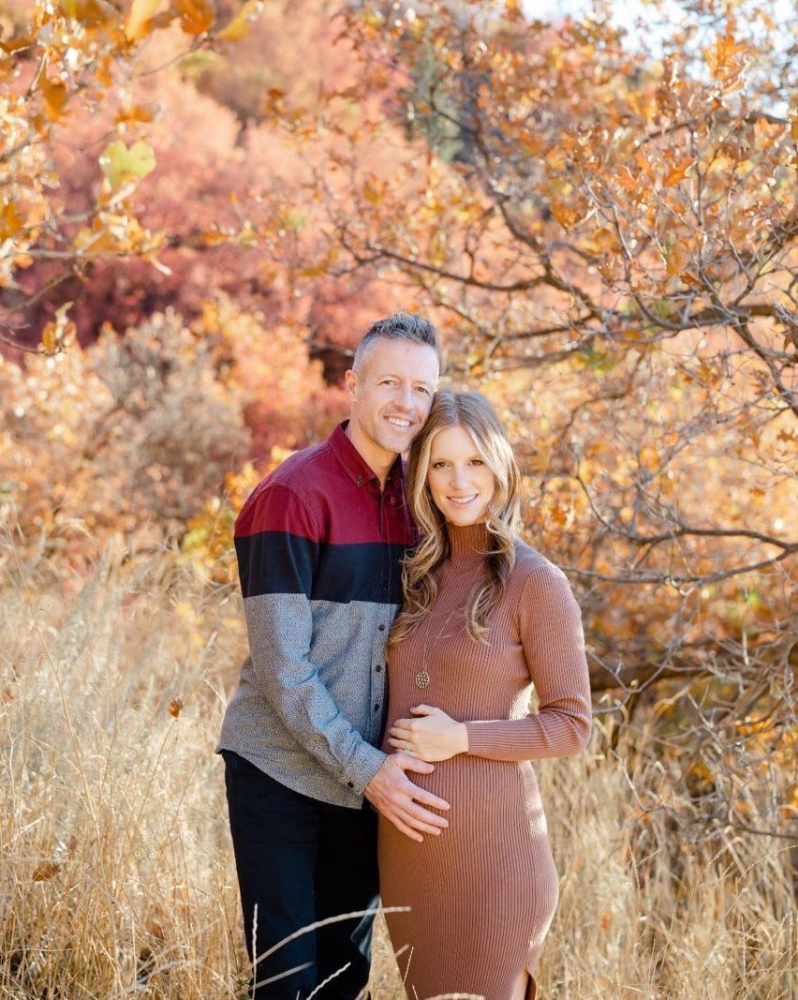

What if giving birth could be the most beautiful day of your life?
Your gentle guide to the calm, empowered birth experience no one told you was possible.
Free. No judgment. Snacks encouraged.
In the movies, birth is a woman screaming while everyone rushes around her. We've seen that scene so many times that most of us grow up believing it's what birth is. It isn't. Your body already knows how to give birth, and it does its best work where you feel safe, calm and loved. I'm Sybille, a mom of two. My first baby was born in a hospital and my second at home, and the difference changed everything for me.

Born in the Nest
The birth story you'll want to tell.

Mom of two · Chief Nest Officer
Hi, I'm Sybille
My first baby was born in a hospital, the way most of us are told it should go. My second was born at home, with a midwife I trusted. Same body, completely different birth.
As my midwife Sarah always said, pregnant women need to feel loved. That's what Born in the Nest is about.
Read my story →Five free lessons
Here's what I wish someone had shown me, in five short emails (one every other day, or read ahead anytime):
Then, every Sunday
💌 The Sunday letters
A weekly guide through your pregnancy, the way a loving midwife would walk beside you, with a real birth story, a small practice and gentle tips for your stage. You're never alone on this journey. Think of it as a steady hand with you every week, all the way to the day you meet your baby.
The Sunday letters →Join the gentle guide
Free, and you can unsubscribe anytime. We never sell or share your information. Education only, not medical advice.
Guides